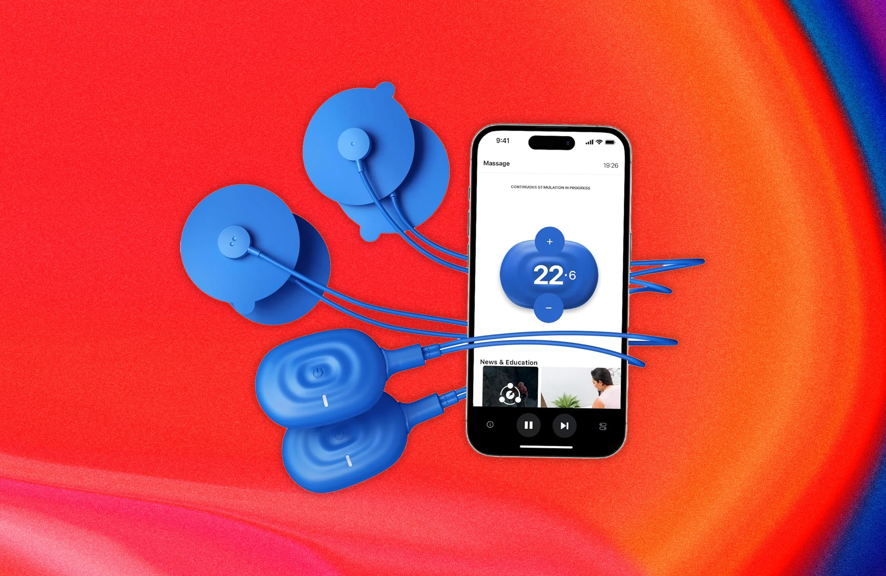

EMS e Eletroestimulação: reconstruindo músculo quando você ainda não consegue se mexer
A atrofia pós-operatória é real. Quando o cérebro “esquece” como ativar o quadríceps, a eletroestimulação (EMS) ajuda a acordar o músculo e acelerar a volta da conexão cérebro-músculo. Eu escolhi o Therabody PowerDot 2.0 Duo pela simplicidade e por ser fácil de levar em viagem.

Minha escolha: PowerDot 2.0 Duo
Após a cirurgia, eu precisava de uma forma de manter os músculos ativados sem colocar carga na articulação. Acabei optando pelo PowerDot 2.0 Duo. Por quê? Principalmente pela simplicidade e preço.
Sou fã dos produtos da Therabody em geral e queria algo que tivesse uma sensação mais “moderna”. A configuração Duo permite estimular os dois lados do músculo (ou as duas pernas) ao mesmo tempo. É totalmente sem fio, controlado pelo celular e pequeno o suficiente para caber na bagagem de mão. Isso foi essencial para mim quando eu estava longe do fisioterapeuta, mas ainda precisava manter o foco na reconstrução.
Mas um detalhe importante: o PowerDot costuma ser difícil de encontrar no Brasil (e quando aparece, muitas vezes vem com preço salgado). Se você não consegue viajar e comprar fora, vale olhar para boas alternativas que existem por aqui. O objetivo é o mesmo: reativar o quadríceps e reduzir a atrofia no começo.
“É como ter um fisioterapeuta no bolso. Perfeito para dias de viagem em que o joelho fica ‘sonolento’ e precisa de um choque de despertar.”
Como isso se compara
| Aparelho | Melhor para... | O diferencial |
|---|---|---|
| PowerDot 2.0 Duo | Viagem & tecnologia | Totalmente sem fio, controlado pelo celular, fácil de usar enquanto você faz outras coisas. |
| Compex (linha Sport/Elite) | Atletas exigentes | Padrão “hardcore” com programas fortes. Os modelos com fio podem ser chatos de montar. |
| Opções no Brasil (EMS/TENS) | Custo-benefício | Fáceis de comprar por aqui. Procure modelos com modo EMS (não só TENS), boa potência e reposição de eletrodos. |
Linha Compex
Se você entrar no “departamento médico” de um atleta profissional, é bem provável que veja um Compex.
- ✅ Recrutamento muscular profundo usado por atletas
- ✅ Tecnologia que ajusta estímulo conforme sua resposta
- ❌ Modelos com fio viram uma “teia” para montar
- 💰 Modelos sem fio tendem a ser bem caros
Aparelhos EMS/TENS (disponíveis por aqui)
Se o PowerDot/Compex não for viável, dá para ter um resultado muito bom com aparelhos nacionais ou fáceis de achar em marketplaces.
- ✅ Procure “EMS” (fortalecimento) — não apenas “TENS” (dor)
- ✅ Preferência por controle de intensidade amplo e canais duplos
- ✅ Eletrodos fáceis de repor (custo e disponibilidade)
- ⚠️ Se puder, peça ao seu fisio para indicar parâmetros seguros para quadríceps
Dicas pós-operatórias para dar certo
Reeduque (não só “tome choque”)
Não fique passivo. Quando o aparelho pulsar, tente contrair o músculo junto. Isso acelera muito a reconexão cérebro-músculo.
Posicionamento do eletrodo importa
Um ou dois centímetros fazem diferença. Use guias visuais (quando existir) e ajuste até ver uma contração clara do quadríceps. Se não estiver “pegando”, mova um pouco.
Mantenha a pele limpa
O custo escondido são os eletrodos. Limpe a pele (lenço com álcool ajuda) antes de usar: os pads duram mais e a sensação fica mais suave.
Vai viajar? Carregue antes
Nos modelos sem fio, a bateria aguenta bem, mas o carregamento pode ser lento. Carregue antes de voos longos para usar um programa leve de recuperação no caminho.